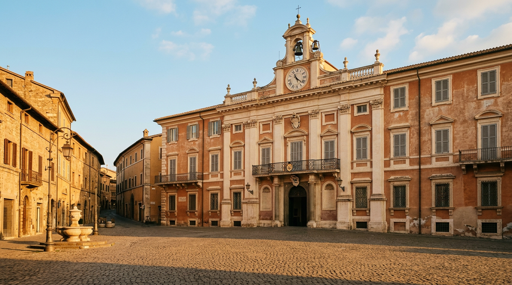
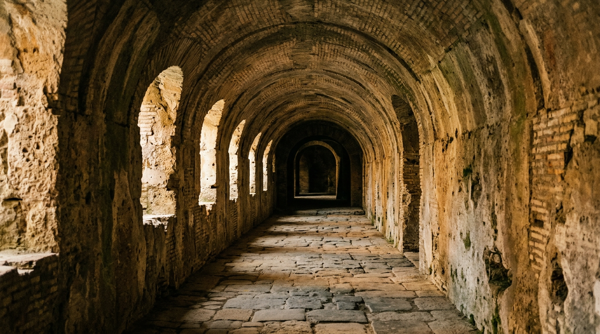
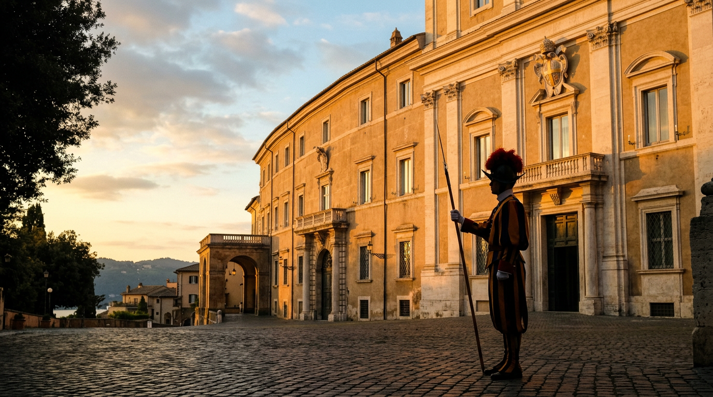
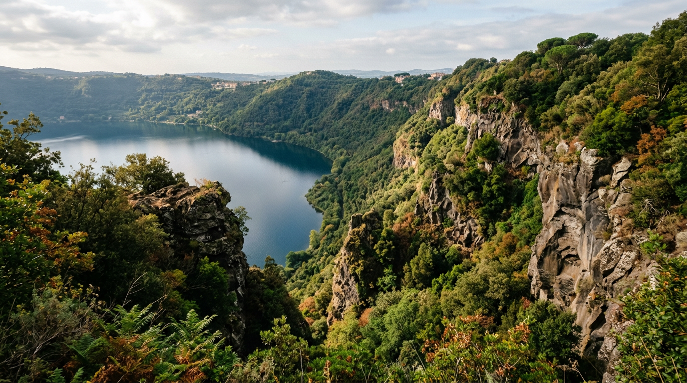
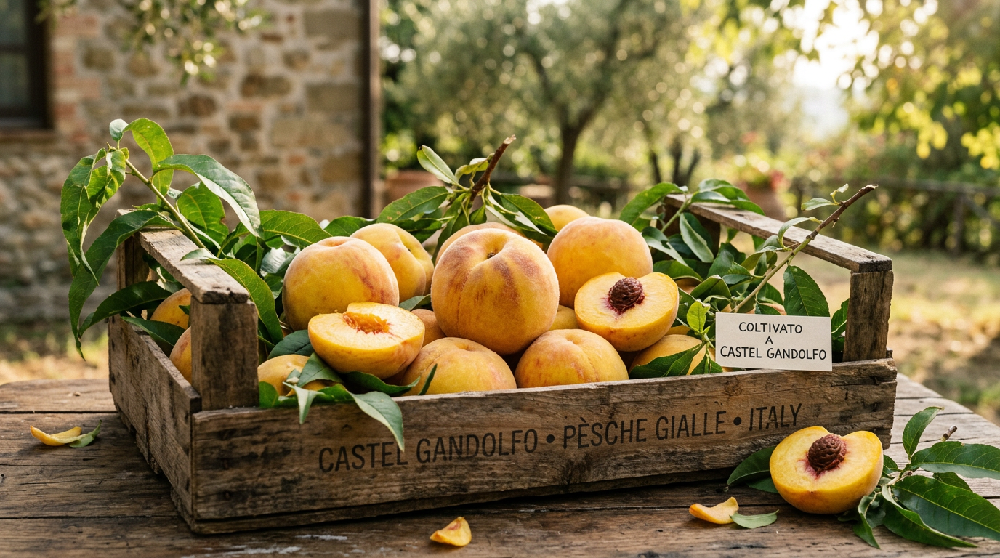

Stories, reporting, long reads.

Angelus Sundays
How, where and when to see Pope Leo XIV on the balcony of the Apostolic Palace. The 2026 calendar with times, access and practical advice for 15 August.

Domitian's cryptoporticus
Three hundred metres of imperial tunnel carved in the 1st century. Two thousand years later, its interior temperature is still a constant fifteen degrees. The climate engineering of a paranoid emperor.

The return of the Pope to Castel Gandolfo
On 5 July 2026, after twelve years of silence, Leo XIV walked through the great door of the Apostolic Palace. A report from the day that gave the town its identity back.

The lake that does not die
What happens below the 168 metres of Lake Albano. How it was born, how it breathes, why it sometimes exhales carbon dioxide. A journey into the geology of the Colli Albani caldera.

The peaches that charmed the Popes
Ninety years of the festival, four hundred years of cultivation. The story of the Castel Gandolfo peach, from the pontifical gardens to the contemporary table.